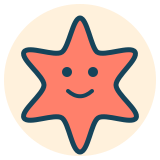

🐒
🍌
모두의
부산길
🎙 말해서 길찾기
⌂ 홈
🗺️ 지도·경로
ACCESSIBLE TRAVEL, BUSAN
오늘의 날씨와
나의 이동 방식에 맞춘 부산 여행
확인된 장애인 편의시설을 갖춘 장소만 추천합니다. 장소를 고르면 접근 가능한 대중교통과 두리발 대체 경로까지 한 번에 확인할 수 있어요.
♿ 편의시설 확인
☂ 날씨 반영
⌁ 저상버스·도시철도
출발 위치
현재 위치 확인 중…
해운대역
부산역
서면역
남포역
현재 위치를 불러오는 중입니다.
여행 날씨
맑음 · 이동 부담 낮음
흐림 · 약한 주의
비 · 이동거리 감점 강화
강풍/호우 · 실외 경로 제한
부산 날씨 확인 중…
추천 업데이트
여행지 추천
⌛ 부산 날씨 확인 중…
♿ 모든 추천지는 휠체어 이용을 위한 편의시설 정보를 확인한 해양 관광지입니다. 실제 시설 고장·운행 변경 여부는 출발 전에 다시 확인하세요.

🗺️ 지도 탭 · 목적지 입력 후 최적 경로 찾기
⌂ 홈으로